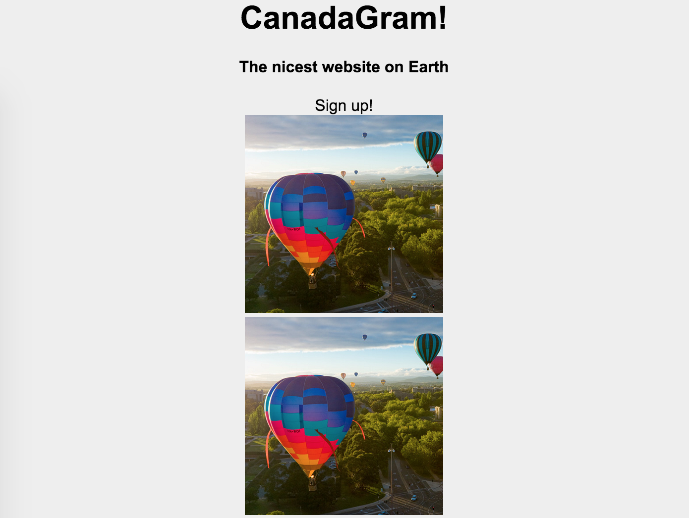

At the end of this hands-on, you should have something like the page below.
Step 1: Set Up HTML
Click here for HTML template. Copy and paste into a text editor!
We're going to write all the HTML elements with classes first, then style. Let's begin by making a "container" div inside <body>. Make sure you put all the other HTML tags inside this container. You'll see later on why we do this, but in a nutshell, container divs make it easy to move large blocks of HTML around the page.
<body><div class="container">
</div>
</body>
Our website needs a title, description, and sign-up button! Using <h1> and <h4>, give your site a name and description. Also, make another div with the class "button". We'll style this later to look like a button.
Your HTML should look something like this:
Next, let's create the HTML for the images. We'll make one image for now, then just copy and paste the code after we finalize the design.
Create a <div> with class "image-container", and inside "image-container", create an image tag. It's good practice to put your <img> inside <div>. Use any image you like.
Updated code screenshot!
Step 2: Make it Pretty
Canadagram looks a bit ugly now - but don't worry! With a bit of CSS, we can easily make it pretty.
Give your entire website a font facelift by adding a font-family to "body" in your CSS. Additionally, let's style .container accordingly:
.container {background: #eee;
text-align: center;
width: 700px;
}
Refresh the page and you'll see a gray box with the title centered. The photo is still too big, so let's fix that. We can select all <img> tags and style:
img {height: 200px;
width: 200px;
}
Oh no - The images are distorted! That's because you're manually setting the width and the height of the image. The image will be resized to fit your dimensions, causing it to warp. Usually, you'll only want to set either the height or the width - not both. But in this case, we want our images to be square. How can we fix that? Use this nifty style: object-fit: cover
img {height: 200px;
width: 200px;
object-fit: cover;
}
You can read more about this nifty trick here. Basically, object-fit: cover centers the photo within the 200 by 200px square, and automatically crops any part of the image that falls outside of the square - without distortion.
Step 3: Positioning and Spacing
Let's copy and paste the .image-container divs to add a few more photos on the page. These are <div> tags, so recall that they stack vertically.

Fix this by adding display: inline-block to .image-container. The images are pretty close together, so let's give them some margin. Add margin: 10px to .image-container. This adds a 10px margin to every side of each <div> with the tag .image-container. Finally, add border: 5px solid white.
Notice that the edge of the gray box is very close to the text and images. Instead of fiddling with the width and possibly messing up the layout, let's just use padding to "push" the edge of the box out. Add padding: 30px to .container. This adds 30px of space along the inner edge of your gray .container.
Step 4: Final Touches
Your website looks pretty nice! (I hope). However, the content isn't centered. To fix that, add margin: auto to .container. Now you see why we put everything inside .container - it makes it easy to move all the elements, including centering them!
Finally, let's make the button pretty. Add the following styling to .button:
.button {background: #517fa4;
color: white;
margin: 20px auto;
padding: 10px 15px;
width: 200px;
}
Play around in web inspector to see what each one of these styles do, and try making your own button.